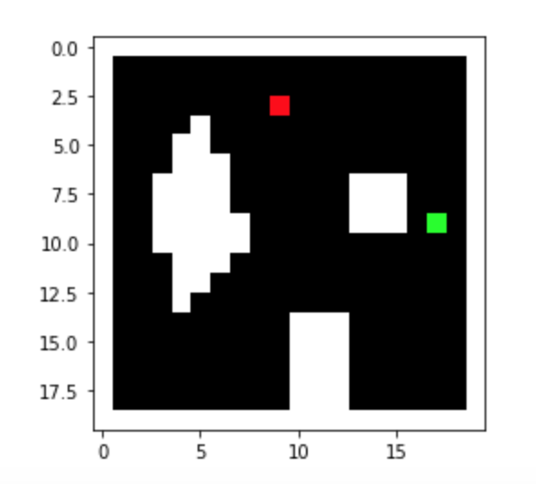

Fast Robots: ECE 4960 Lab 10
Objective
The purpose of this lab is to design a motion planning algorithm on the real robot in order to make it move from an unknown location to a goal location. I will use the robot I have developed in previous labs and develop a searching path program with the Bayes filter to achieve the goal of the lab. I will separate the lab into three parts. First, I will create a function that is able to convert a map frame to a grid frame, so I can use the given code directly to generate the start and the goal location. Next, I will develop the route searching algorithm and test it with the virtual robot. Last, I will implement the system on my robot and test the algorithm in the real world.Prelab
Since the result of the route planning needs to be shown on the python plotter, it requires using Bluetooth to communicate between the base station and the robot in order to collect TOF measurements and compute the estimated position in real-time. Therefore, I followed the TA Alex’s instructions that are posted on the course discussion board. I added a class that shows in Figure 1 in the main function, so I could defiance the robot in the jupyter notebook in order to call the task commands.Figure 1. The class adds in the main function.
Once the program was completed, I ran the commands that show in Figure 2 to discover and connect to the robot’s Bluetooth. After the LED on the Artemis board started blinking, I could tell the connection was stable, and I was able to either request the float values from the robot or send the commands to the robots.Figure 2. The discover and collect commands for BLE.
Next, I started working on the coordinate transformation program in Matlab because I designed a similar function before, so I just needed to modify it for the lab. Figure 3 shows the map frame of the real world map and the simulator map. I used the function that shows the script to generate the occupancy grids.Figure 3. The map frame of the real world map and the simulator map.
The concept of the function was that the system will create multiple dots on the obstacles’ boundaries and then the system will find the range of each grid cell. Later, a loop would identify which cell each dot belongs and add the occupancy flags to the cell. Last, the system will find the cells that have non-zero flags and give the cell a true value (1). The result shows in Figure 4. From the figure, I noticed that the cells within the obstacles’ boundaries have a false occupancy value, so I manually entered the true value to those cells and the final result shows in Figure 5. The function is shown in this script.Figure 4. The grid frame of the real world map and the simulator map.

Figure 5. The updated grid frame of the real world map.
After I got the array of the cell’s index for the occupancy grid, I applied to the code in planner_query.py and generated the start and the goal coordinates for both maps. The documents can be seen in REAL_MAP and SIM_MAP. The reason why I decided to use 20 x 20 cells on the map is because the coordinates generated from the program could be directly used in the Bayes filter function and the search program.Route planning
After the function could select random goal locations, I started working on the motion planning of the robot. I wanted the robot to do as little communication with Bluetooth as possible because the connection was unstable. Also, I knew that the real robot data was really noisy, so the only stable control was the speed of the motor. Therefore, I decided to find the completed route between the goal and the start point after the robot finished the first Bayes filter estimation. Then, the base station would send a command packet that includes speed control and moving time, so the robot would automatically move from the start point to the goal location. I tried two strategies that the robot would turn when it met the obstacles and stopped when it reached the destination. I used the center point of each cell to consider the possible route and defined the list that contains the obstacle’s cell number. The flow charts were shown in Figure 6.Figure 6. The flow charts of two motion planning strategies.
So, the first approach was to determine the relative direction between the start and endpoints and then decide the priority direction of the robot. For instance, if the starting point was on the right side of the goal point, the system would make the robot go right first until the robot reached the same x coordinate. Then, the robot would detect the relative y coordinate and decide to go up or go down. If the robot met obstacles during the process, it would repeat the searching process by trying another three different directions until the robot found the way out. The result was shown in Figure 7.
Figure 7. The result of the first approach.
Although this strategy can find the completed path between the goal and the start point, it requires many turns which will be hard to implement on the real robot because the turning angle was hard to control. Therefore, to minimize the robot turning, I modified the first approach and came up with the second solution. In the second method, I defined a midpoint between the starting point and the goal. This point would select at an open place but close to the map’s boundaries. Before the algorithm was operated, the system would determine whether the goal or the starting point was more left and lower because the robot was set to priority go right and up. Hence, the robot would only go as far as possible in one direction until it reached the expected cells. The benefit of the midpoint was that it could make the robot avoid obstacles. I tried to imagine that there was an invisible track surrounding the map which would not hit any obstacles. The midpoint was on this track, so the robot could generate a route without considering the obstacles as long as the robot reached the midpoint successfully. The result is shown in Figure 8.Figure 8. The result of the second approach.
The result showed the optimized route between the two points, so I started to combine this algorithm with the Bayes filter. The completed function is shown in this document. I made the robot run the Bayes updated step to obtain an estimated starting point. Based on the starting point, the motion planning function would generate the route. Then, the route would insert into the robot control function which would organize the order of the moving direction and calculate the real distance for each direction. Besides, it would use the given velocity to find the time that needs to move in each direction. Then, the robot would start to move and do the Bayes filter after each turning to ensure the robot was in the right direction. If not, the robot would keep fixing the turning angle until the difference was smaller than the defined value.Virtual robot simulation
In the testing, I selected four different start/goal sets from SIM_MAP, which were [(8,1),(8,10)], [(18,1),(6,16)], [(1,2),(9,17)], [(13,1),(6,18)] and [(1,2),(9,7)]. (Note: the coordinates from the start/goal program should be changed because the (0,0) was on the top-left corner, but (0,0) of the simulator map was the bottom-left corner.) The results are shown in Figure 9. The blue line was the route for the robot, the green line was the true trajectory and the yellow line was the estimation trajectory. According to the performance, I believed that the program worked properly and the repeatability was high. The demonstration of one testing set is shown in Video 1 that shows the entire process. The log can click here.Figure 9. The motion planning results of five different sets.
Video 1. The demonstration of motion planning in virtual robots.
We could see that there was still a deviation between the truth pose trajectory and the expected route. The reason was that the motion planning was highly dependent on the estimation angle from the Bayes filter. Also, the angle between each cell was 20 degrees which may cause errors. If we want to improve our accuracy, we could either reduce the sigma value of the Bayes filter or increase the number of measurements for the observation process. However, I expected that the real robot would be unreliable if I made it do lots of estimation from the Bayes filter because it required many times the observations. So, I tried to run the test without the Bayes filter estimation between each turning. During the process without the Bayes filter as feedback, the robot will only do an updated step at the beginning and the estimation until the robot finishes with all the control commands. The results were shown in Figure 10.Figure 10. The results of the motion planning without the Bayes filter as feedback (first three) and with Bayes filter as feedback (last).
I found that the repeatability of the process was reduced because there was no feedback between each turning, so if the robot turned in the wrong direction, it would continue to do the process. However, the time-efficiency was increased if the robot did not turn in the wrong direction and the accuracy was still acceptable. Therefore, I decided to run the real robot without doing the Bayes filter as feedback while turning first to see its performance, but the robot would check its estimation position when either the bumping obstacles’ flag was triggered or the robot was finished with all the motion commands. If Bluetooth worked well, I would apply the Bayes filter for every turn to improve the robustness of the program.Real robot implementation
To make the base station control the real robot easily, I organized the motion control of the robot into three different functions, which were forward function, turning function and the observation function. The functions can be seen in this document. The forward function was able to make the robot go straight within the given time from the base station. The turning function could make the robot turn 90 degrees and it would repeat the given time from the base station. The reason why I chose to make the robot turn 90 degrees for each time was that the theoretical turning angle from the motion planning was multiples of 90, so it can make up for the lack of the rotation accuracy. Last, the observation function was used to rotate 360 degrees and measured 18 sets of the surrounding distances. Then, I modified the base station program by adding a module that would take the output from the control function and convert the control command with the travel distances into the readable command with a specific time needed for each command. The example output is shown in Figure 11. Therefore, when the base station sent a letter “f” and a given time, the robot would go straight within the period of given time. The example command is shown in Figure 12. The python module can be seen in this document, and the Arduino script for receiving command and requesting float is shown in this script.
Figure 11. The example output that converts the control command into a real-robot readable command with time.
Figure 12. The example forwarding command.
Once I tested the program with several different commands on the real robot, the robot was able to recognize the command and make the corresponding behaviors. So, I continued to modify the Bayes filter. I only changed the observation module and the get_pose module for the Bayes filter, so it can take the result directly from the get_float function. Since the get_float function was an asynchronous function, I followed the instructions from Alex in order to assign a variable with the await command. The code I added in the python script is shown in Figure 13. Then, the overall program is displayed in this document.Figure 13. The code added/modified for the Bayes filter.
After I completed all the required changes of the program, I started testing the motion planning of a physical robot. I tried five different start/goal sets from the REAL_MAP, which were [(17,2),(10,11)], [(9,16),(17,10)], [(2,4),(10,11)], [(12,7),(4,4)] and [(13,18),(4,15)]. The final results for each test are shown in Figure 14 and the logs are stored in this document.- 
Figure 14. The results of the motion planning (left) and the goal/start map (right).
Table 1. The error percentage between the goal and the estimation points.
From the tests, the robot can successfully predict its start position and generate the proper route between the starting point and the final destination. Video 2 shows the entire process of the motion planning for test 5 [(13,18),(4,15)].Video 2. The demonstration of the motion planning for test 5.
From the demonstration, the robot’s motion control was noisy and had motion inertia, so I needed to adjust the robot angle manually if the angle offset between the expected angles was too large. However, the robot can successfully follow the motion commands from the base station and tried its best to reach the destination.